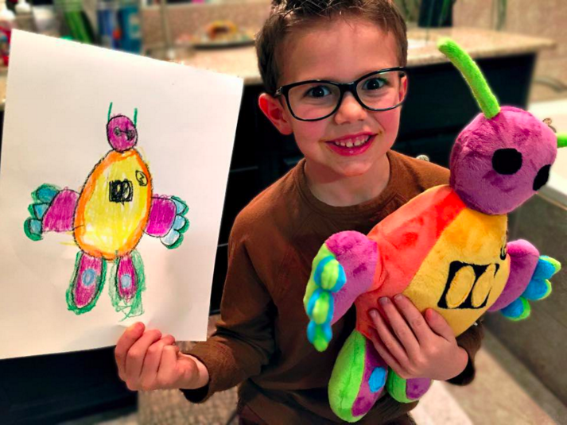
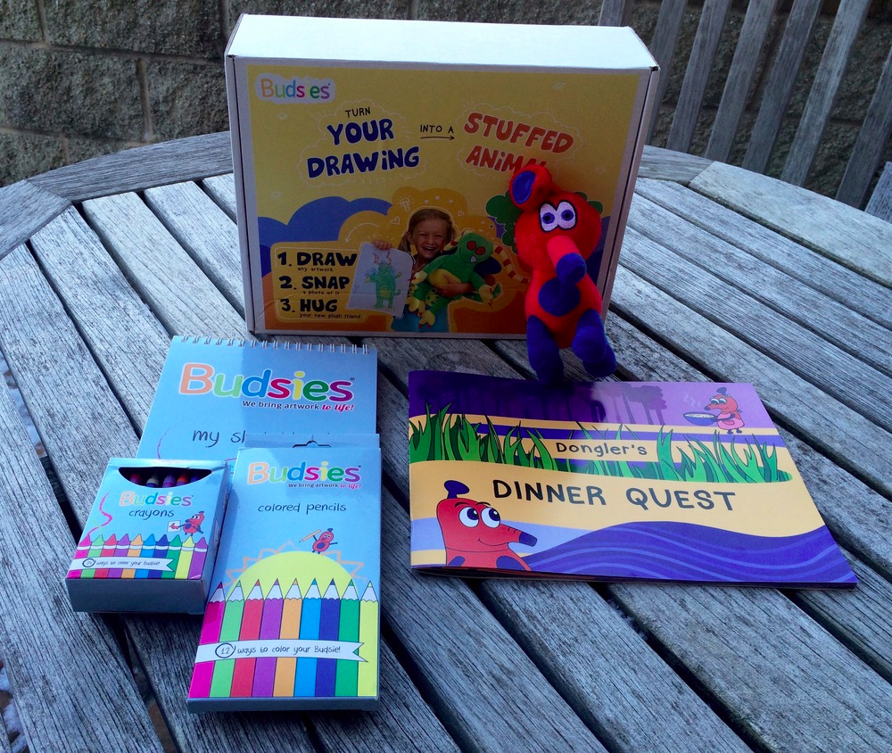
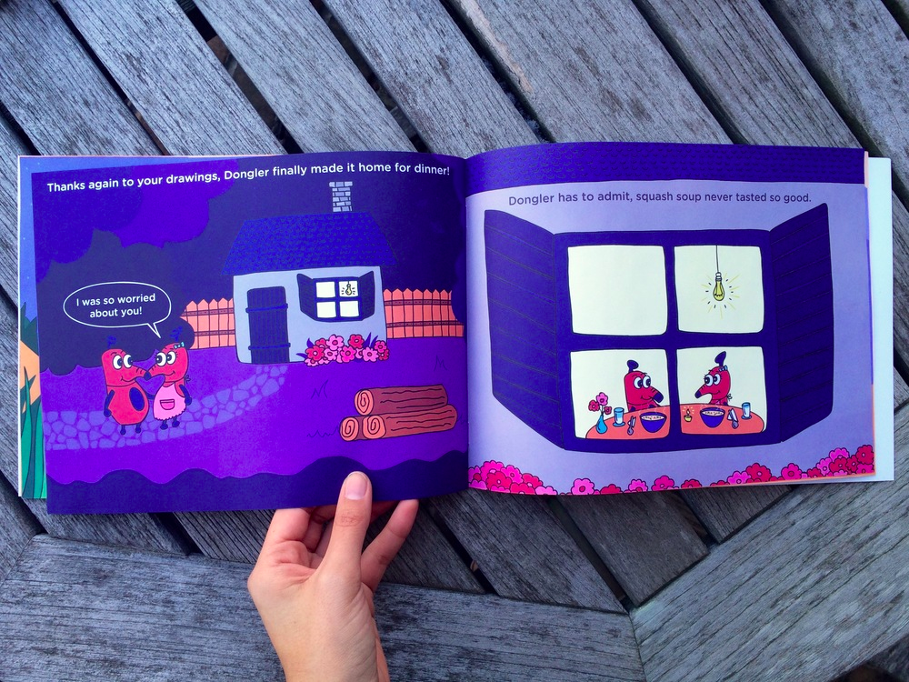
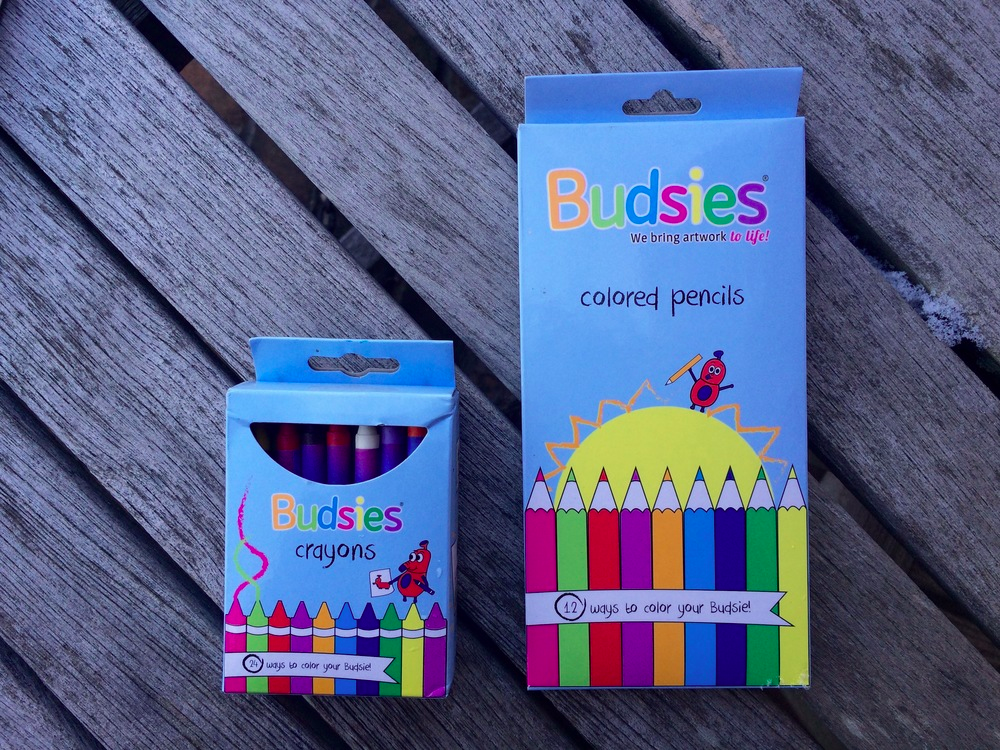
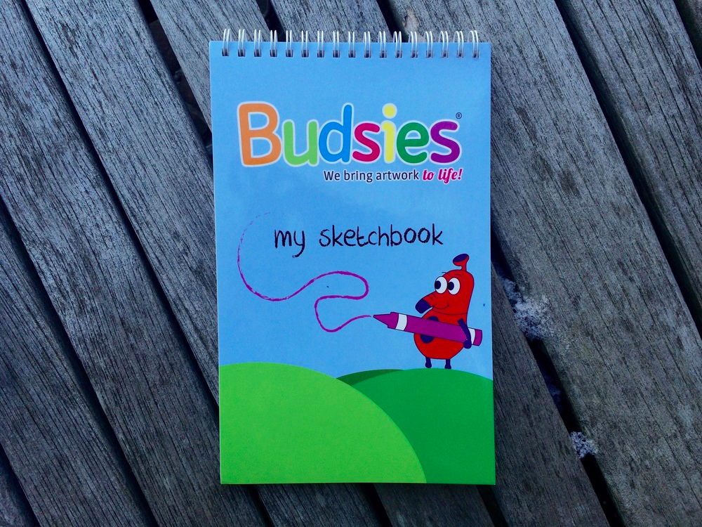

Budsies
Budsies is a startup company that turns children’s drawings into custom stuffed animals.
It's pretty awesome. Check it:
Their best season, of course, is holiday season, but the problem is that it takes 6-7 weeks to make a Budsie. Instead of shutting off holiday orders early, they needed something they could keep selling up until Christmas - even as a great last minute gift.
That’s where the “Creativity Kit” came in: A pre-paid kit for *designing* a Budsie. It needed to be more substantial than a gift card, but easily produced. The Creativity Kit needed to be an *awesome physical experience*.
I led this project from concept to mass production as part of my summer internship at Budsies.
Here's how:
Step 1: Decide what goes in the kit
We chose 6 items:
- Storybook: encourages kiddos to draw, and makes an impression during the unpackaging experience.
- Crayons: we wanted the kit to have everything needed to create a Budsie and be entirely self-contained.
- Colored pencils: these get the details crayons can’t and gives kids more choices to draw with.
- Sketchbook: where kids draw and actually design their Budsie.
- Voucher: makes parent/friend feel like they really bought something, a tangible currency.
- Stuffed animal: it’s exciting to receive a 3D toy. Kids want something to immediately play with. Again part of the tangible experience. We chose “Dongler,” the Budsie red elephant-looking mascot, as the stuffed animal.
Step 2: Design each item
I prioritized which items to design first based on manufacturing lead and shipping time.
We first focused on the crayons, colored pencils, sketchbook, and stuffed animals because the manufacturers were located in China and the lead time would be significant.
Storybook
We wrote, designed, and published Dongler’s Dinner Quest (ISBN: 978-0-9968074-0-1). Of all the items, the storybook was my favorite because the process required both creativity and technical work, pluswas very thorough and thought out.
Our goal was to create a book that would wrap the child in the Budsies world and to help them come up with wacky drawings by giving them constraints. We also wanted the storybook to be part of the magical unpackaging experience that would absorb the child when they opened the box (just like the magical experience they get when receiving an actual Budsie). We also wanted the character to come to life, for the child to empathize and love the character.
Before even beginning writing the storyline, I visited Barnes and Nobles to see existing books. I’d never written a book before, and it’s been a while since I’d been around kids - definitely good to do research before getting started.
I knew the book couldn’t be many pages in order to keep costs under control. Also, I had to incorporate our mascot Dongler into the story to make him a recurring character in the brand. Since our goal was to encourage kids to draw, we decided to create pages where kids could literally draw inside the book.
Plot: Dongler, who works at the Charming Chowmungle Chocolate Factory, needs to get home in time to see his wife and eat dinner. He faces 3 obstacles along the way, and the only way he can passed them is by drawing friendly creatures.
I made sketches and binded them in book form because it was easy to make quick revisions before spending a lot of time and energy in illustration phase. Then, when the illustration phase came along, we knew exactly what we wanted.
Crayons and Colored Penciles
We created the crayons and colored pencils to make sure the children had everything they needed to draw their Budsie all in one box - contributing to the magic and specialness of the experience.
We wanted the crayons to be branded as special Budsies crayons to keep it magical and cohesive. The crayons needed to be high-quality, not chalky and cheap, and conform to safety standards. Achieving all of these proved to be surprisingly difficult!
I designed a crayon box - first on paper (for feedback), then on Illustrator. I then worked together with Chinese manufacturers to iterate on quality and safety. In the end we had our boxes:
Custom Sketchbook
The core of the Creativity Kit is, of course, the blank paper for drawing the Budsie. Of course, we couldn’t just throw in blank sheets of paper. We wanted this to contribute to the experience we were creating.
There were several things that were important here:
- We wanted a great cover that was consistent with the crayon packaging because they would be used together. They should feel made for each other.
- A thick cover, because it always makes the contents feel more important - reinforcing this is the core of the kit.
- A high page count to give the child plenty of room to play with and feel free to draw.
- A high page count also would create a heavier, more substantial box. Heavier gifts are always more fun to receive and feel more valuable. A thicker sketchbook was a cost-effective way to increase the weight of the package.
I designed the cover and worked with our manufacturers to ensure our sketchbooks turned out exactly how we wanted.
Step 3: Design the box itself
The outside of the box is the most important. It’s what people see at first glance. Both unwrapping it as a gift and seeing it on the shelf.
We put the most important information on the front (how cool Budsies is + how it works) as well as an image of a child holding up their Budsie next to an image of the artwork she drew (which directly conveys how Budsies works without many words) so that a shopper in a retail store would be drawn to it upon first glance.
Again, I sketched and several versions on paper before moving forward with illustrations or anything that would take a lot of energy to edit. Also, the quality of box was important. It couldn’t be flimsy - it needed to feel like a high-end gift. Went back and forth with vendors until we found a firm box at a price in our budget that accepted a full range of pantone colors.
All-in-all
I’m particularly proud of this project - a physical product shipped to large numbers of customers. I took the Creativity Kit from initial concept to full mass production. I got to be involved not just with the graphic design, but with the physical experience, and production phase. Given I had no experience starting out, it was a huge learning curve, but I managed to do it under tight time constraints.
See it live: https://www.budsies.com/creativitykit